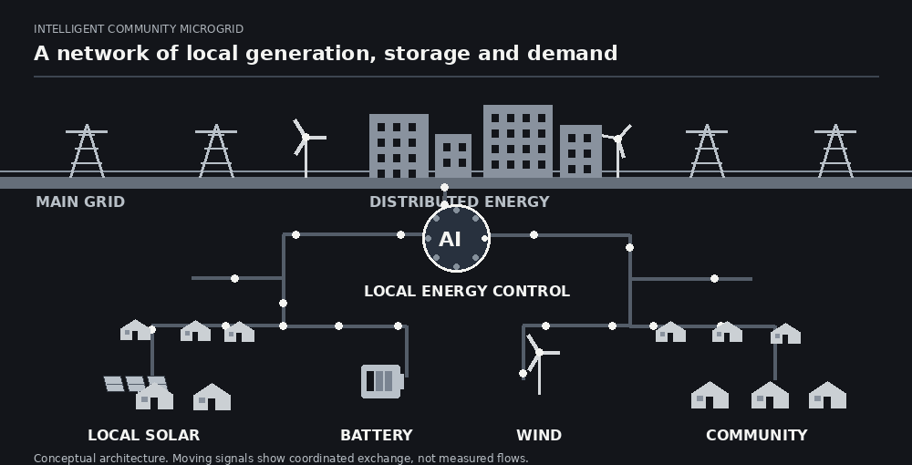

Intelligent Energy Systems
I develop and assess methods that coordinate generation, storage, demand and grid exchange. The aim is to make everyday operation more responsive to changing conditions.
I investigate how community-scale electricity systems can integrate renewable generation, storage and intelligent control. The central question is how to balance affordability, reliability and lower emissions in both design and operation.

I develop and assess methods that coordinate generation, storage, demand and grid exchange. The aim is to make everyday operation more responsive to changing conditions.
I study local power systems for communities, including design choices, energy flows and real-time operation. This matters where reliability, affordability and renewable integration have to work together.
I examine how battery and hybrid storage can support peak-load management, renewable use and continuity of supply, alongside the operational constraints that determine their value.
I explore data-driven forecasting and learning-based control as tools for energy-management decisions, with attention to whether methods remain useful under changing demand and generation.
My work compares dispatch and investment choices across cost, emissions and reliability objectives, using simulation and optimisation to make tradeoffs explicit.
I assess how distributed systems respond to disruptions while reducing reliance on high-emission energy. Current directions connect operational intelligence with practical system design.
My current direction brings together energy-system simulation, forecasting, optimisation and learning-based energy management. I am particularly interested in solutions that can be assessed against real operating constraints and used in community and industrial power systems.